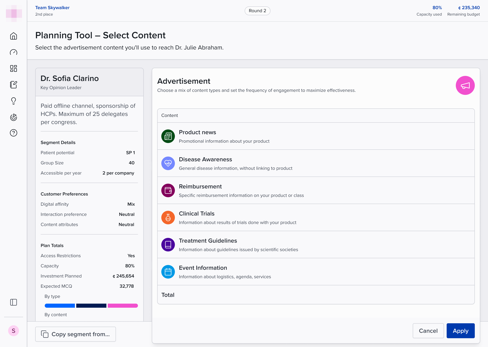
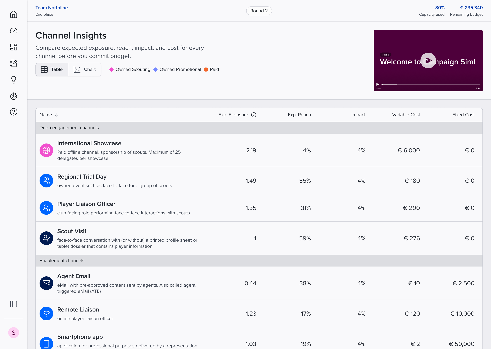

Learning by spending a budget.
Omnichannel planning is abstract until you have to do it with real constraints. This simulator, built for a client under NDA, turns it into a game: teams get a budget, a roster of key opinion leaders to reach, and a set of channels, then compete across rounds to build the most effective campaign. Standing, capacity used, and remaining budget stay pinned to the top of every screen, because those three numbers are the game.
Each channel, explained plainly.
Every channel is a card with a plain-language description of what it actually is: a rep visit, a congress sponsorship, remote detailing. The expert you're planning for sits in a fixed panel on the left with their preferences and your running plan totals, so each choice is made against the person, and against the money, at the same time.


Every result traces back to a decision.
Before a plan is submitted, the review screen lays the whole campaign on the table: investment and expected outcomes per expert, deltas against the previous round in plain green and red, and the plan's mix by type and content. The point of the game is the debrief, so the screen is built for arguing over: every number traces back to a decision someone on the team made.

Results
- Teams replan against results across rounds, and the interface carries the score.
- Standing, capacity, and budget stay pinned to every screen.